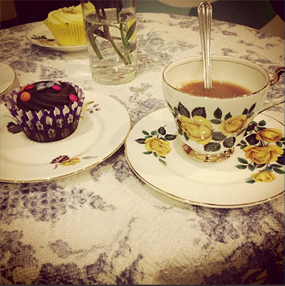
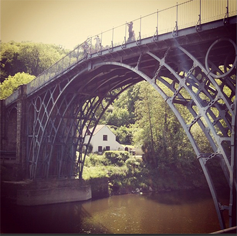

Tea for two
Today was a slow day for knitting, but a great day for tea. Look at how sweet that tea cup is! There was a McMillian coffee morning held at the local cafe, where if you donate one whole sterling pound, you get a cup of tea and a cake of your own choosing. I chose a delicious chocolate cupcake, just what I needed for a nice early morning.
I have been able to keep up and knit a few items, such as a cable knit pillow case for my older sister. She wanted a beige-y coloured standard pillow, probably to go with the blanket that I knitted for when my niece arrived. (You can find the pattern
here) I will also attach a link for the pillow case and a possible picture soon enough!
Hope you all have a lovely weekend and let me know what you will be knitting, share your links or pictures on the interact page!
Hi all! Just a quick note here! Just filling this in whilst I have a little break from knitting a jumper for myself! Do you ever get that feeling that once you start knitting, you need to stop everything else and just carry on knitting until it is finished!? Let me know on the interact page!
How's the knitting going people? I am currently in the process starting the jumper for a pattern that I paid for with real actual money! Le gasp! That's how badly I wanted to knit this!
It is going to nice and lightweight, so I can wear it on a nice summers day (if that ever happens again!) What are you knitting today?

The bridge of iron
Here you can see the infamous Ironbridge, located in Ironbridge, Telford. It is very idyllic isn't it? We went on a family trip around Ironbridge, had a lovely walk down many wobbly stairs on a beautiful and rare, sunny day. I even convinced my mother to buy an ice cream for me (to share with my siblings, sigh.) It was a very pleasent day, which ended with us feasting at a local pub, ironically fitting for the day; 'The Bridge Builder'. I may have had a sharing platter all to myself.. whoops!